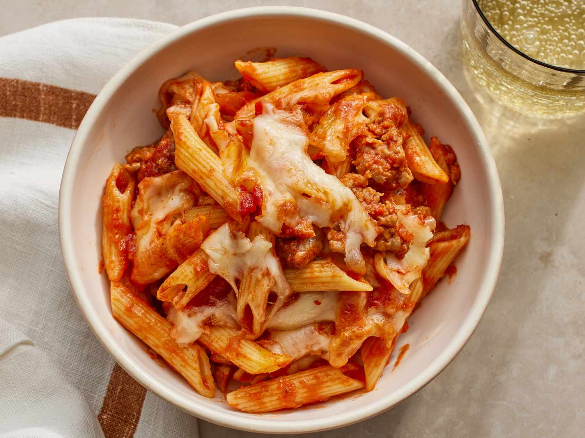

Penne Pasta

Chicken Penne Pasta Recipe!
Pasta with tomato sauce is a classic Italian dish. It's so simple to make, and you have
a lot of freedom when preparing it. Each element of this dish can be
changed to fit your liking, so experiment and find what you like the best. Notable options
include subbing the tomato sauce for an alfredo sauce, or changing the type of pasta
to something like linguine or spaghetti.
Ingredients
- 180g chicken thigh
- 28g Italian cheese blend
- 1/3 cup pasta sauce
- 1 serving or 200g penne pasta
- seasoning blend
Steps
- Start boiling the water to cook the pasta
- Pound and season chicken breast with your favorite seasoning blend
- Cook chicken in air fryer at 400 degrees F for 12 minutes, flipping half way
- Begin cooking the pasta after flipping the chicken half way through
- Remove chicken and allow to rest before slicing
- Cook pasta to al dente or desired firmness before draining
- Place pasta in bowl and top with sauce, cheese, and the sliced chicken thighs. Enjoy!